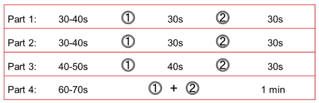
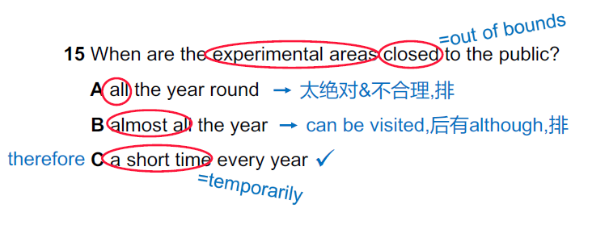
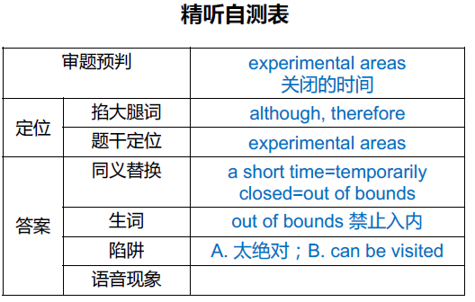

1 概述
1.1 雅思听力概况
时间：30分钟做题+10分钟誊答案（机考2分钟）
结构：1 Version=4 Parts=40 Questions
- 5.5：20-22
- 6：23-26
- 6.5：27-29
- 7：30-32
| Parts | 主题 | 形式 | 题型 | |
|---|---|---|---|---|
| Part 1 | Survival English | Dialogue | 填空 | 最重视，最多错1~2个，最好全对 |
| Part 2 | Survival English | Monologue | 单选，配对，多选，图题 | |
| Part 3 | Academic English | Dialogue | 单选，配对，多选，图题 | 最难 |
| Part 4 | Academic English | Monologue | 填空题 |
雅思听力时间分配
- 提示：必须重视P1，剩余时间看P2， 不推荐用P1的时间看P3、P4
1.2 常见难点对策
词汇匮乏：多背单词；音、形、义，缺一不可
语音干扰：跟读模仿，纠正自己的发音
语速太快：跟读模仿
吞音：爆破音结尾（p,b; t,d; k,g ）+ 辅音开头
group discussion / job center / private property / mid-day / ability to think quickly / leg bone
连读：辅音结尾+ 元音开头（a, e, i, o, u）
stand up / good idea / far away / bad eyesight / about an hour
格式问题（填空题）
字数限制：
- NO MORE THAN THREE WORDS AND/OR A NUMBER：3+1
- NO MORE THAN THREE WORDS AND/OR NUMBERS：3+n
- NO MORE THAN THREE WORDS OR A NUMBER：3/1
- ONE WORD ONLY
注意：155625这是一个number；但是 5 to 12 是两个number
大小写和英美式 : 不区分
单复数：错了就全错
连字符
1.3 舌尖上的听力：如何练习听力
- 第一遍找考试的感觉，先不对答案，1铅2蓝3红;
- 精听答案句并总结(定位、语音、同替、陷阱)
- 对照原文总结生词+理解
- 大声跟读模仿答案句(精准为王，语速其次)
- 填空题答案句做听写；选择题答案句做复述
- 从头到尾再做一遍题， 查缺补漏 (可适当倍速)
1.4 tips 总结
- 如果在第3部分，这个Beth可能是说话者。另外如果有名有姓如Beth Smith才有可能是定位词，如果只给了名，那么很可能是对话人的名字
2 填空题做题方法
2.1 填空题做题步骤
读
字数限制
定位三宝：名词，数词，专有名词
限定词语：范围/程度——时间、地点、最高、否定
猜：所填词性、词类、生词发音。名词词性居多。词类是指地点相关的词，食物相关的词。
听
- 实时定位
- 信号词（掐大腿词）
- 排除陷阱
写
- 所听即所得：不要翻译，听到什么写什么
- 速记简写：最好是听的时候就能写出，如果有几个特别长的词不能马上写出可以简写
查：字数要求；拼写格式；语法；单复数
2.1.1 信号词
- 逻辑词处：表转折、递进、因果、强调、顺序、解释等；
- 表递进：also, as well as, another, in addition, moreover, besides
- 表转折：but, however, although, yet, whereas, nevertheless, in spite of, while, on the other hand, surprisingly, unfortunately
- 表因果：because, since, so, therefore, as a result, consequently
- 表强调：in fact, actually, especially, indeed, obviously, apparently, the most important thing is…, another interesting thing is…
- 表顺序：first, second, then, next, lastly, finally
- 表解释：I mean, in other words, that is to say, namely, which is
- 语气强调处：重读、重复、停顿、犹豫等；
- 出现新的专有名词：人名、地名、新概念、数字等。
2.1.2 填空题的“祖宗”——定位
听前：划出定位三宝+限定词；预判所填词性词类
听中：保持实时定位；竖起耳朵抓信号词（掐大腿词）；错过的题目果断放弃
2.1.3 填空题各类型要点
2.1.3.1 表格题
- 个人信息表格题
- 纵横表格题
- 注意看表头
- 梳理表格的逻辑
- 空前后找定位
2.1.3.2 句子填空题
基本情况：
- 分布跨度广，各Part均有出现
- 难度随所在Part发生变化
- 完整句子，有助于预判和定位
方法技巧：
- 注重审题，做好预判
- 注意题干中的限定词
- 注意句型或语序变换
- prizes were given player = player receive prizes
- A of B = B A
2.1.3.3 简答题
基本情况：
- 题型出现频率很低
- 整体难度不大
- 问题明确，目标清晰
方法技巧：
- 注意疑问词
- When – the time
- Where – the place
- What/Which – something
- Who – somebody
- Why – the reason
- How – the way
- How much – money / time
- How long – the duration
- How often – the frequency
- 根据问题对答案进行合理预判
2.1.3.4 提纲笔记填空题（part 4）
大标题：
- 提示听力主题
- 预判场景
小标题：
- 揭示展开逻辑
- 帮助定位
注意：
- 讲座涉及内容广泛、学科专业性强，但所填词汇不难；
- 提纲笔记填空题本质上就是Part 1中Notes题的加强版本，依然主要靠定位做题。
做题技巧：
- 开头有寒暄，正题开始标志： now, Ok, first, anyway, etc.
- 注重并列关系：
- and/or连接的词（词性、词类一致、单复数大概率一致）；
- 项目编号（小黑点，小横杠等）
- 注意表示强调的句子，如：
- It’s very important that…;
- Don’t forget…;
- An interesting thing is…;
- especially… ,
- 注意重读的名词、形容词、动词等，可能成为答案
- 注意空前空后紧挨着的信息
2.1.4 填空题的考点
填空题最高境界：不懂全文也能做对题——审题+预判+定位+抓词+速记
填空题注意考差我们一下几个方面：
- 并列关系：a kitchen，a xxxxx and a gym: xxxx一定是一个关于地点的名词。听力里面有一个 a kitchen with food store ，是一个陷阱，是一个所属关系不是并列关系
- 语序变换
- 定语后置：听力是 Earth surface；填空是 surface of the Earth
- 定语后置：听力 standard of fitness is low；填空是 low levels of fitness
- 题干同义替换
2.2 Addresses & Names
邮编格式：
No. Name + Street City Postcode（165 Riverside Street, London, SE1 4XA）
“道路”的常见英文表述：Road, Avenue, Lane, Street, Drive
道路命名多参考自然景观、颜色、方向、国王(King)、女王(Queen)等
常见国家及城市：
- the UK / the Great Britain 英国 ：England 英格兰 、Scotland 苏格兰、Wales 威尔士、Northern Ireland 北爱尔兰 London 伦敦
- Australia 澳大利亚：Sydney 悉尼
- New Zealand 新西兰：Auckland 奥克兰
- Canada 加拿大：Toronto 多伦多
- USA / America 美国：New York 纽约
人名&地址拼写
注意字母连读
注意/m/, /n/
先听整体发音，再听字母
tips：如果听到double u 那么就很可能是 w
反向验证：就是写完了，自己读一遍，看看是不是和听到的整体音一致
2.3 数字相关考点
2.3.1 数量单位
位数：
| 数字 | 汉语 | 英语 |
|---|---|---|
| 100 | 百 | hundred |
| 1,000 | 千 | thousand |
| 1,000,000 | 百万 | million |
| 1,000,000,000 | 十亿 | billion |
不要去想汉语，听到哪个，对应写几个零
听不出“几百” 、“几千” 怎么办？
up to a hundred 中的 a 可能听不清，那么如果听不清，就是100。其他数字如one、two都会重读
千位的特殊读法：1500也可以读 fifteen hundred
省略的特殊读法：3000-4000 words——three to four thousand
小数：
- 小数点读point
- 0.28
- zero point twenty-eight
- point twenty-eight（零可以省略）
十几和几十：
- 十几 -teen：有/n/ 的鼻音
- 几十 -ty：无鼻音
如何区分180和190：
- 180的读法：
- 常规版本：a hundred and eighty
- 连读版本：a hundred an(d) eighty / ən eɪti/ 读 内
- a hundred and ninety /ˈnaɪnti/ 读 奶
计量单位：写缩写
- 长度：metre, kilometre ——m，km
- 重量：gram, kilogram——g，kg
- 容积：litre, gallon——L，gallon不要求掌握
- 面积：square metre, hectare——机考不考平方的写法
2.3.2 电话号码
0（零）的读法：
- zero
- 字母O
两个相同数字连读：double
- double O ：/ˈdʌbl əʊ / 变成 low
三个相同数字连读：triple
- triple O：/ˈtrɪpl əʊ/ 变成 low
出现三个零，可读thousand
- 2475000：two four seven five thousand
连读现象：
- 48：/fɔːr eɪt//
- 68：/sɪks eɪt/
- 78：/ˈsevn eɪt/
- 88：/ˈdʌbl eɪt /
2.3.3 时间日期
日期的写法：
27 September——统一 日+ 月
2023年09月27日：
- 27.09.2023
- 27 September（推荐）
30分钟、15分钟的特殊读法：
- 9 : 30 ：half past 9
- 9 : 15 ：a quarter past 9
- 8 : 45 ：a quarter to 9
雅思听力采用12小时制
3:30和3.30这两种写法都可以
2.3.4 货币金额
美元、英镑、欧元（dollars=$, pounds=£, euros=€）
付款方式
cash, check/cheque
credit（赊账）, credit card（信用卡）
bank transfer/ online transfer
telephone, post
2.3.5 数字+字母混合
Postcode: WS62YH —— 2字母+n数字+2字母
Bus number: 21A——结尾是一个字母
Flight number: CA936——开头是两个字母
Room number: B659
Passport number: JO6337
Reference number: 39754T
Membership number: UK765024EG
Driving licence number: UT9128
3 图题做题方法
3.1 地图题的做题方法（重点）
题型：①填空式地图题；②匹配式地图题（居多）
做题方法：
- 读：
- 题目要求：字数限制
- 方位指示：
- 东南西北的角标：没有该角标就不会把东南西北作为考点
- 上下左右：top、bottom、left、right
- 起始位置：
- you are here
- entrance/gate
- information center/reception
- car park
- stairs
- Now we’re standing at…
- 猜：（看图）
- 确定题目顺序：题号顺序
- 默念图上信息：确保听的时候不会陌生
- 熟悉相对位置
- 听：
- 起始点
- 方位词+参照物=答案
- 画路线：机考的需要鼠标跟随
- 写、查
- 按序号写答案
- 填空式地图题需注意字数要求、格式、拼写、单复数等
总结：
- 标出方位指示
- 明确起点位置
- 遵循顺序原则
- 听清关键词语
- 关注特色位置
- 三点成一线
- 转角遇考点
- 出入口考点
最重要的是积累地图题的词汇与表达：
表示方位：
north, south, east, west, northeast, southwest…
top, bottom, end, top-right-hand corner
beside, (right)opposite, behind, in front of
towards, face, along, beyond, across
right opposite(正对面，right修饰其他方位词表示 “ 正…. ”)
far side of the railway : 离我远的地铁的一边
near side of the railway : 离我近的地铁的一边
表示道路：
crossroad, T-junction, intersection, side road
path, corridor, pavement, pedestrian crossing
bend, turn,corner,curve, branch off, lead off
表示建筑物形状：
round, circle, circular, half circle, oval,
triangle, square, rectangle, rectangular,
diamond, a row of, winding
地图词汇：plan=map=layout=slide
到底是左还是右
- 默认根据图外作为标准
- 图中：听力会给出提示，如
- standing in front of these two buildings, facing them
3.2 其他（不怎么考）
还有其他两种图：示意图 + 流程图
做题方法和地图题类似：
- 标出方位指示
- 明确起点位置
- 遵循顺序原则
- 听清关键词语
- 关注特色位置
4 单选题的做题方法
4.1 单选题解题思路
读题干，划关键：①定位三宝+ 限定词；②如果没有就找，动+ 形
扫选项，找异同：
圈划关键词(名动形)
注意选项间的关系
题干为主，选项为辅
如果没时间看了，就先看题干，如果听的时候看选项
如果选项很长，也没时间看，就直接别看选项，直接听听力，当做简答题来考
听同替，排陷阱
- 注意掐大腿词
- 陷阱类型：
- 不符合题干要求：就是原文提到了选项，但不会回答题干的问题
- 不符合原文描述：就是听力提到了选项的关键字，但选项不是原文的意思
4.2 单选题的方法技巧
同义替换原则：
- 同义词：disadvantages —> drawbacks
- 同词根：beauty —> beautiful
- 上下义：art work —> painting
- 解释说明：neighbor —> people living nearby
- 疑问词转换：why —> reason
- 反义词：slow —> not that quick
相似二选一：
句子结构相类似
意思相近或相悖
并列都不选
态度助判断：在答观点题时，需要判断选项的情绪，有助于帮助我们解题
常识原则：选项可能不出现在原文中，但是会有相关描述，比如选项summer，原文描述为maximum temperature
一般不选绝对词/极值词
“独立”和“预定”：
- 独立：think independently；critical thinking
- 预定：booking；reservation；reserve；appointment
4.3 精听自测表
 5. 多选题及配对题的做题方法
5.1 多选题
多选题解题思路
- 读题干，划关键：看清选几个，注意范围限定词
- 扫选项，找异同：圈划关键词，将选项分类简化
- 听同替，排陷阱：
- 选项一般乱序出现
- 注意表顺序的掐大腿词
- 跟上节奏，及时判断
- 注意表顺序或递进的信号词
多选题常见陷阱：
- 时间陷阱
- 过去：in the past；previously；last year；used to have；unfortunately（肯定是过去发生了什么，才觉得不幸）；closed down；v. + ed
- 现在：now；present；at the moment；currently；recently；already；v. + ing
- 将来：in the future；soon；later；next year；not complete；under；construction；be about to；be considering；be planning；be postponed=delayed
- 否定陷阱：instead of；rather than；unlike；rarely；without；except；avoid；replace A with B …（要B不要A）
- 更正信息陷阱：l thought / expected A was …，but actually it was B that …
多选题“蒙”题技巧：5个选2个的题目蒙B；7个选3个的题目蒙C；D之后出现一个答案的概率大
5.2 配对题
选项＞题干：
- 选项是对题干的解释说明
- 选项有多余，不会重复选择
- 非态度类
选项＜题干：
- 选项是对题干的分类
- 选项无多余，会重复选择
- 态度类
配对题解题步骤：
- 预判选项和题干，两者谁更容易被同义替换，先看更容易被同义替换的那边，划关键词，理解意思
- 边定位，边扫选项，顺序原则做题，即听即选，酌情排除
转载请注明来源，欢迎对文章中的引用来源进行考证，欢迎指出任何有错误或不够清晰的表达。可以在下面评论区评论，也可以邮件至 1909773034@qq.com